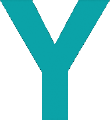
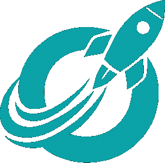

Community First
We grow together or not at all. We share what we learn and help each other ask better questions.
Fresh perspectives on technology, ideas and the world around us: from AI, energy, blockchain and stablecoins to sports and collectibles. Do Your Own Research. Stay Bullish.
A live recap of the week’s tech news, market moves and stories that matter.
Where AI meets energy. The chips, the grid and the capital behind them.
Sports, fantasy, and the business of the game: the matchups, the numbers, and what they mean.
Rips, Clips, and Rare Finds. Trading cards, collectibles and the thrill of the reveal.
We grow together or not at all. We share what we learn and help each other ask better questions.

We believe in long-term ideas and innovation. Optimism means looking for what can work, without ignoring the risks.

Build conviction before clout. Real progress matters more than appearances, hype or performative wins.
The strongest ideas come from shared perspectives. We welcome honest disagreement and learn from people who see things differently.
Follow @DYORPod for every live Space, subscribe on YouTube, and listen wherever you get your podcasts.